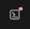

We're glad to have you in our program! First let's look around at where we are...
The site you're at is codesandbox.io. They are an online integrated development environment. Wow! That's a bunch of words! Let's unpack that... An "Integrated Development Environment" (called an IDE for short because that's a huge name) is a space developers use to have all their tools visible at once and easy to jump between so they can work quickly and effectively. Codesandbox runs through your internet browser window which makes it an online IDE. Later in class you'll download, install, and use a software program that is an IDE that runs whether you're using your internet browser or not.
It's a place where a user interacts with a piece of techonology. There are a few main areas in within this interface.
The Explorer area to the left shows an index.mjs file and an index.html file where all of this content is written. For this exercise you only need to work with and edit code within the index.mjs file.
The Editor section is in the middle and may already have a couple of tabs open. This is where you will be editing the index.mjs file. One thing that will likely look different from a normal text editor or word editor is that different portions of the code will be colored in different ways. This is called Syntax Highlighting and is useful when working in a code file to quickly identify the different parts of the code.
The Browser section on the right is where you are likely reading this content. You will see a small button on the top right of this window that looks like this (it may not have the red dot in the corner):
Click that icon and a panel will open below this Browser window with the inspector (also known as developer tools) where you should be able to see your console.log code you will write to test your code. Make sure you have the word "Console" selected. The console will be empty to start with.
There are further details in the index.mjs on console.logs and how/where to use them
In code, you don't want many - if any - bugs. Bugs can cause your code to NOT run as you expect or want. We call checking for these kinds of issues in your code and fixing them "debugging". You should use console.log to output values in the code to assist in debugging. For example, if you are having an issue with something related to the firstName variable you might add this line of code right below the variable to see what the actual value is at that point.
console.log('firstName variable is: ',
firstName)
Then check
the output in the Console. We have console.log code written for your first
few questions, but they are commented out so you won't have errors in your Console to start with.
When you've written your code, comment in (remove the // in front of the console.log)
so you can see what to do. Be sure you follow that pattern
for all of the other questions.